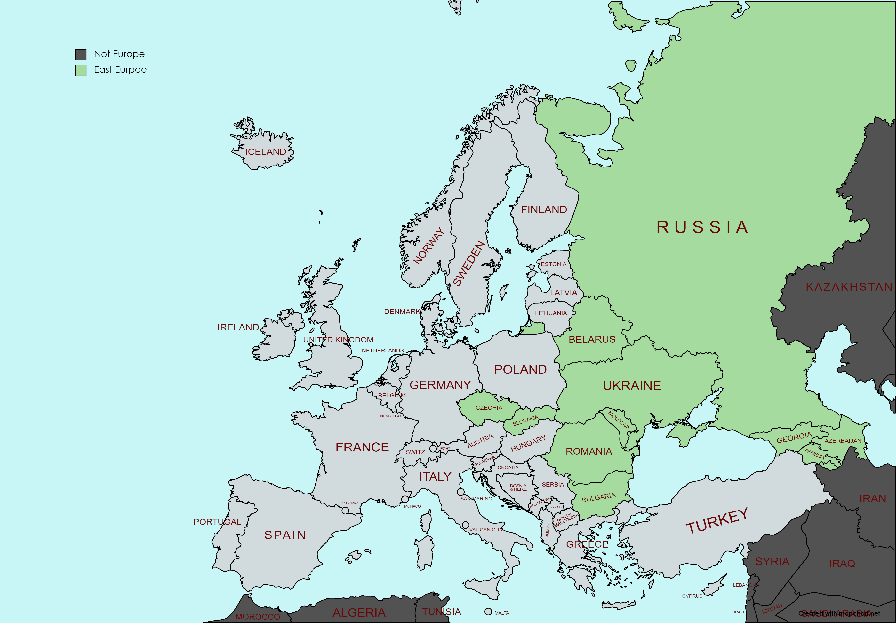
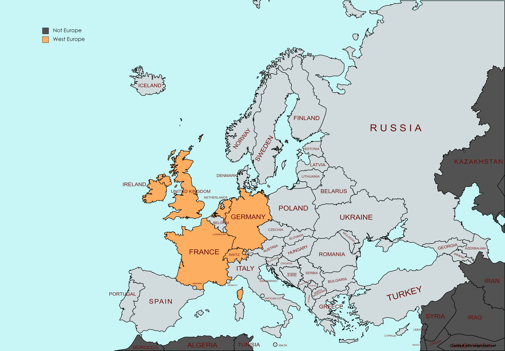

Thank you for visiting MY EUROPE TRIP ALBUM!
Click the map to go to NORTH EUROPE Album!
North Europe I visited during 2009-2019 is highlighted
in lightblue.
Click the map to go to SOUTH EUROPE Album!
South Europe I visited during 2009-2019 is highlighted
in lightyellow.
Click the map to go to EAST EUROPE Album!
East Europe I visited during 2009-2019 is highlighted
in lightgreen.

Click the map to go to WEST EUROPE Album!
West Europe I visited during 2009-2019 is highlighted
in lightorange.

Click the map to go to ABOUT Page! It is about me.
Europe I visited during 2009-2019 is highlighted
in lightblue, lightyellow, ightgreen and lightorange.
Click the map to move to ABOUT Page! It is about me.
Europe where I visited during my life until 2019 is highlighted
in lightblue, lightyellow, ightgreen and lightorange.